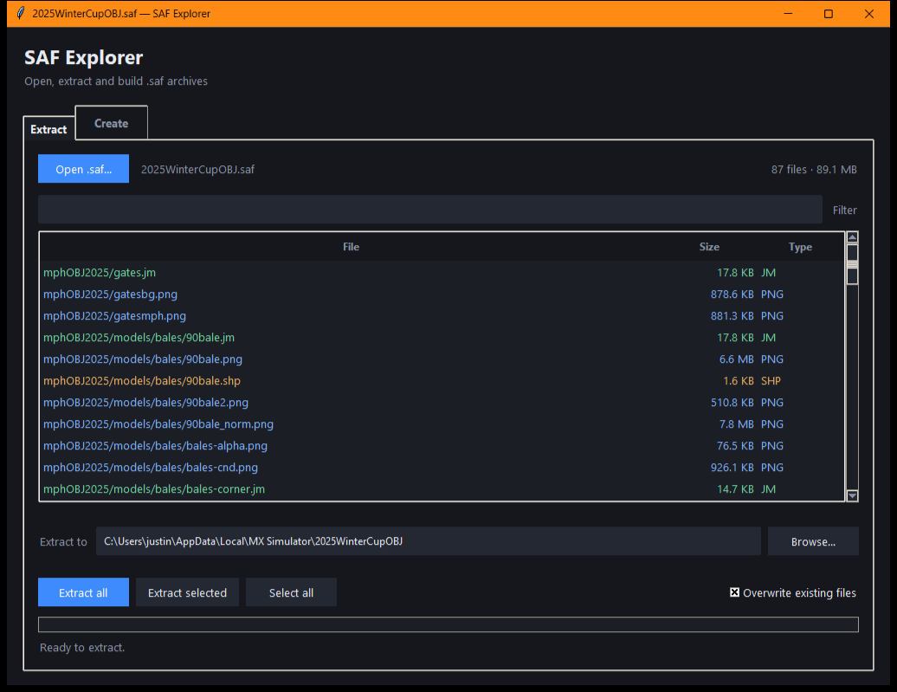
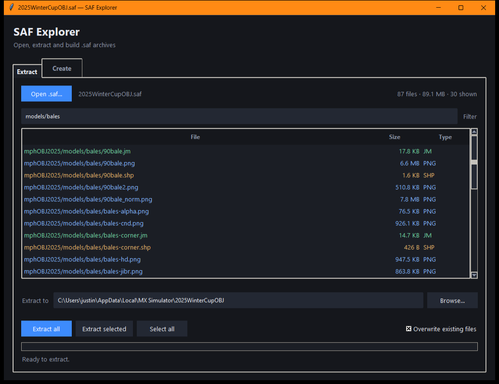
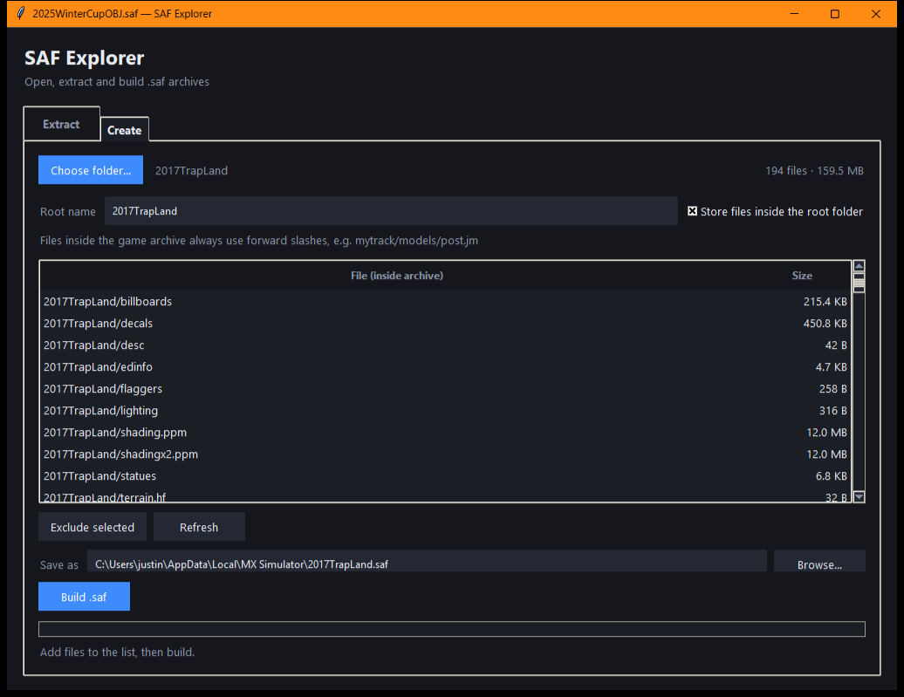

Opens instantly
Only the header is parsed when an archive is opened, so a 900 MB file lists its contents immediately instead of being read into memory.
Windows · 11.5 MB portable exe · no dependencies
SAF Explorer opens MX Simulator archives instantly, lists every file with its size and type, and extracts what you need — or packs a folder back into a .saf. One small executable, built from the Python standard library.
No installer · One .exe · Drop a .saf on it to open the archive

Screenshots
Captured from the running app against a real MX Simulator archive — no mock-ups.

Filter as you type. Narrow a long file list down to the handful you need. Ctrl + A selects every visible row.
Packing a folder. Scan a directory, choose the root name, exclude rows, then build. The archive is written to a temporary file first.Features
Only the header is parsed when an archive is opened, so a 900 MB file lists its contents immediately instead of being read into memory.
Pull out every file or just the selected rows. Work runs on a background thread with a progress bar and a working Cancel button.
Archive names are sanitized before anything is written, so .., absolute paths and drive letters can never escape the destination folder.
Existing files are left alone unless overwriting is enabled, and a build writes to a temporary file before replacing the target — an interrupted build never leaves a broken archive.
The root name becomes the first path component, forward slashes are used throughout, and zero-byte entries and LINK stubs round-trip untouched.
Pure Python standard library for the logic and Tkinter for the UI. The shipped executable is a single file and runs without Python installed.
Checked against 424 retail archives: every one parses, header length plus entry sizes equals the file size exactly, and an 89 MB archive extracts and repacks byte for byte — a case covered by the test suite.
The file format
A .saf is an uncompressed container. One line per file gives the byte count and archive path; a line containing only - ends the header; the file data follows in the same order.
18216 mphOBJ2025/gates.jm
899712 mphOBJ2025/gatesbg.png
902443 mphOBJ2025/gatesmph.png
30003 mphOBJ2025/models/warning/warning_spec.png
-
<899712 bytes, then 902443 bytes, …>The same bytes in the same order, nothing else.
Get it
The release asset is the executable committed in the repository, built from the checked-in PyInstaller spec. The exe is unsigned, so Windows SmartScreen will warn on first launch elsewhere — choose More info → Run anyway.
SAF.Explorer.exe.saf onto itPrefer Python? Clone the repo and run:
py safgui.py
py safgui.py "C:\MX Simulator\myarchive.saf"